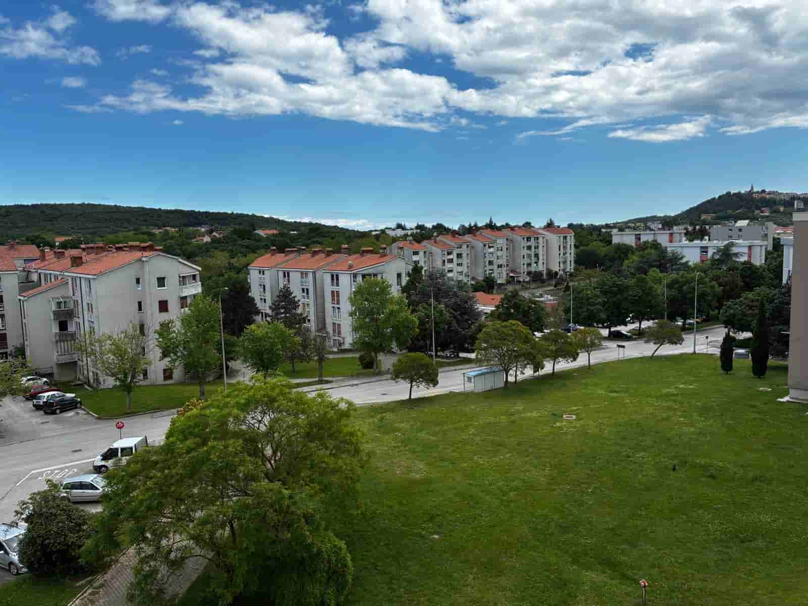
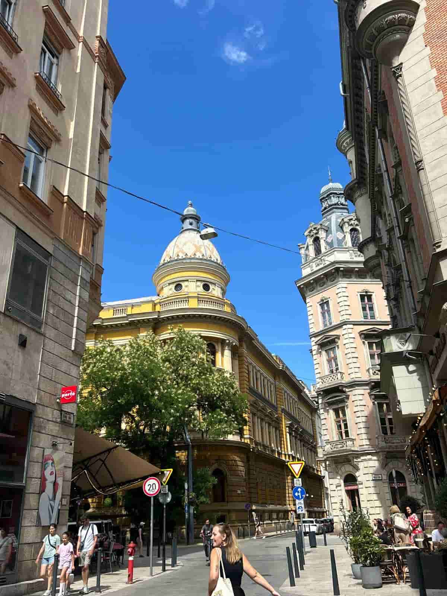

Kvalitetan video zapis donosi pokret, emociju i osjećaj prostora koji potiču reakciju gledatelja.
U Frameyju stvaramo video materijale koji nisu samo vizualno atraktivni, već imaju svoju svrhu.
Svaki kadar i svaki projekt pažljivo planiramo prema vašim ciljevima, lokaciji i priči koju želimo ispričati.
Profesionalna video produkcija prilagođena vašem projektu i viziji.
Kroz dinamiku videa i pažljivo odabrane kutove snimanja naglašavamo prostranost, arhitekturu i ambijent nekretnine. Pomažemo potencijalnim kupcima ili klijentima da dožive prostor na najbolji mogući način.
Tražimo kadrove koji najbolje prenose atmosferu, funkcionalnost i jedinstveni karakter svakog prostora.

Bilježimo ključne trenutke, spontanu energiju i atmosferu vaših važnih događaja.
Stvaramo dinamične video zapise i promo videa koji čuvaju uspomene ili služe kao vrhunski materijal za promociju budućih Eventa.